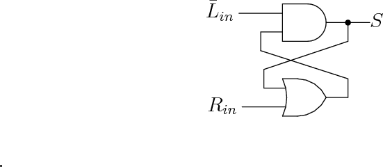

A few years ago, my daughter Rebecca, KE7TEK, and I put together an Elecraft K2 kit. A great resource for any rig is the users’ email list; I subscribed to the Elecraft email reflector1 in case we needed help or advice during construction.
Recently several people on the email list commented that the built-in cw keyers in commercial rigs are iambic keyers – sometimes like the Elecraft rigs they give you the choice of Curtis mode A or Curtis mode B,2 but generally not the older ultimatic mode. Since the new Elecraft K3, like other software defined radios, has downloadable firmware, the obvious, and cleanest, solution to this problem is to include a selectable ultimatic mode in the keyer firmware. This will probably be included in the future, but what if you want ultimatic mode now or want to use ultimatic mode with a rig which won’t be upgraded? You have two choices: either you can use an external keyer that includes the ultimatic mode, for example the K1EL keyers,3 or you can try to put together an adapter that will make the internal keyer act like an ultimatic keyer. The advantage of the adapter is that you can use the rig’s front panel controls – the speed control and all of the rig’s keyer memories are available. Rigs like the Elecraft K3 can transmit RTTY using the paddle input (but not the external key line) so that this feature becomes available to ultimatic users.
John Kaye’s, W6SRY, first ultimatic keyer design was published in QST in 1953.4 He used a single lever paddle in his original design. His next version 5 used a dual paddle and it is this keyer’s action that gives the ultimatic mode its name.
While the ultimatic keyer used a dual paddle, unlike iambic keyers closing both the left and right paddles gave the same result as closing only the last one. For example, to send an x with the ultimatic mode you could hold closed the dash paddle for the first dash, then add the dot paddle for the middle two dots, releasing just the dot paddle then gives the last dash. With the ultimatic mode all letters except C can be made with one closure of the dot and/or dash paddles. Iambic keyers can make a C with a single squeeze, but need more than one closure for X and P. An ultimatic keyer can make a question mark, comma, and double dash, BT, with one closure, while an iambic keyer can make periods, semicolons and AR, SK and AA with one closure.
After learning about the ultimatic mode, I thought it would be fun to try to come up with a circuit that would allow a standard iambic keyer to function like the ultimatic. Since you can build a whole keyer from a microcontroller, you can obviously use a microcontroller to do the job. However, this has the disadvantage that builders need to have a programmer for the microcontroller. The big advantage is that one small low power chip is all you need. An alternative is to use standard logic gates since the logic needed is rather simple. I was able to come up with a circuit that uses 6 NOR gates and an inverter, so two quad NOR gate chips will also work. In this article I will describe both routes.
A pair of quad NOR gates costs less than a dollar, so the adapter is inexpensive to build. Any microcontroller has more than enough power for this job, and the simplest ones also cost a dollar or less while the one I used in the end is around two dollars. Unless the adapter is built into the rig, connectors and the enclosure will cost more than the electronic parts.
Part of the fun of the design is working out the necessary logic. Here the design is practically a text-book example. If you just want to try out the circuit, then you can skip the logic design and just look at section 5 or section 6 for the prototype circuits. Just remember that you must have a PIC programmer to use the PIC microprocessor circuit.
Since closing the paddle grounds the input, I represent an open paddle as a 1 and a closed paddle as a 0 so that ground potential is a 0. I want to drive the keyer through isolating transistors which will invert the outputs. It makes sense to take the case where the output is on (i.e. the key line closed) as a 1 and the output off as a 0.
Since I use my left hand to operate paddles (I operate a bug right handed) but I have the paddles wired for right-handed use, it gets too confusing to talk about dot and dash inputs and outputs. Instead I will simply call them left and right inputs and outputs.
I write the left and right paddle inputs as Lin and Rin, and the corresponding adapter outputs as Lout and Rout. There are five possible states of the ultimatic:
State 1 has both paddles open and neither key line keyed. States 2 and 3 have either just the left or just the right paddle closed and the corresponding key line is keyed. Finally States 4 and 5 have both paddles closed. They key the line corresponding to the last paddle closed.
The next step is to write what is called the transition state table. This is just a fancy name for writing the logic above in a tabular form for easier analysis. The adapter is in one of its 5 states when the input changes. The transition state table then gives the new state and outputs as shown in table 1. Each row corresponds to a current state given by the first entry. The other entries in the row correspond to the 4 possible inputs, and give the resulting state and the outputs. For example if we are in state 3, that is, the left paddle is closed and the right is open, and we close the right paddle. The input is now 0,0, and we will change to state 5 and the outputs are (Lout = 0, Rout=1), so the entry corresponding to state 3 and inputs 0,0 is 5 (0,1). Notice that there is a “-” for state 1 with the input 1,1. That is because this corresponds to both paddles closing simultaneously and should never occur, so we don’t care what the adapter does.
We could produce a circuit to make our transition state table, but it would be more complicated than necessary. In fact, one reason to write the transition state table is to be able to see unnecessary redundancies. In table 1 rows 2 and 4 are identical and rows 3 and 5 are identical. Because the transitions from states 2 and 4 are identical, we don’t need to consider these as different states and can combine them into a single state. Similarly we can combine states 3 and 5 to make a single state. Row 1 has a dash in the last column and is identical to the other states everywhere else. It can be combined with either of the other two. (This in fact says that if we did somehow manage to close the paddles simultaneously, our choice here says it is like closing one before the other and our choice specifies which one we take to have closed first.) I choose to combine it with 2 and 4, the old states 1,2, and 4 then become new state 0, and the old states 3 and 5 become new state 1. Rewriting the transition state table using these new states gives table 2. This table is simpler and will give a simpler circuit.
Calling the state S, the truth table for the transition state table is shown in table 3. The truth table is constructed by writing for each current state value Snow, and input values Lin, Rin, the corresponding new state Snext and the output values Lout, Rout. For example from our reduced transition state table we see that if both paddles are closed Lin = Rin = 0, and the state S = 0, we keep S = 0 and and the outputs are Lout = 1, Rout = 0.
We now want to describe the truth table by a set of logic equations. Let’s try to figure out a logic equation for S. If we look at the rows where the Snext values are 1 (i.e. true), they all have Lin = 0. In addition, they have either Rin = 1 or S = 1 or both. The logic is Snext is (NOT Lin) AND either Rin OR Snow. Standard notation uses a bar over Lin to indicate the NOT, AND is represented by the dot ⋅, and OR by the plus sign +. The logic equation becomes S = in ⋅ [Rin + S]. Repeating the analysis for Lout and Rout the logic equations representing the truth table can be written
Figures 1 and 2 show hardware implementations and some transforms using De Morgan’s rules for the first two equations.6 Using these transforms, the equations can be implemented using two NOR gates each. The third equation uses the same hardware as the second equation with the labels R and L interchanged and changed to S. The final simplified circuits using just NOR gates are given in Figures 1c, and 2c. An additional inverter is needed to get the inverted S input.
Combining the logic gates for the three equations together gives the complete hardware implementation shown in figure 3.
Since I was just seeing if this would work and not trying to build a permanent adapter, I put the circuit together on a prototyping board. I had some CD4001 integrated circuits in my junk box, so I used those. My rather messy result is shown in figures 4 and 5. Ugly style construction could be used for something more permanent, or a circuit board laid out, but I have not done that.
I have a Microchip PICkit 2 programmer.7 Since my shack computer runs linux, instead of Microchip’s software I use the open source gputils8 for an assembler and linker. Microchip provides compilable source code that will operate the PICkit 2 on Linux and Macintosh, and fully supported software for Windows. If you use Windows, you can simply use Microchip’s software. Both Microchip’s tools and the open source tools use compatible source code and produce the same hex output files used to program the microprocessors.
Just about any of the PIC microprocessors can be used. I initially tried a PIC10F200, one of the most basic PICs available. While it worked, I wanted the processor to sleep when it wasn’t busy. According to its data sheet the PIC10F200 can take many milliseconds to wake up from sleep, and a wake up from sleep is like a reset and starts the program at its beginning with the processor reset to its default configuration. More powerful PICS can be programmed to wake up and continue processing the instructions after the sleep instruction. To simplify the programming and make the adapter more robust, I switched to one of these more powerful PIC microprocessors. The one I had in my junk box was a PIC16F690. It has much more power, more peripherals and more memory. These are all unused and wasted for this simple application; many pins of the PIC16F690 are unused. The circuit diagram is shown in figure 6, and the source code files are given in the appendix.
The PIC16F690-I/P costs a couple of dollars directly from Microchip, with similar prices from Mouser, Digikey and other vendors. For this application you could use one of the 12F series 8-pin chips which would be a little cheaper and significantly smaller. You would need to modify the source code for the different chip or write your own from scratch – the program is very short and simple.
The main advantages of the PIC solution is having only one integrated circuit and on chip pull up resistors for the paddle inputs. This can help if space at a premium, for example when building the adapter inside a rig. A disadvantage is that the PIC has a clock oscillator, and this could produce rf interference, especially if mounted inside the rig near the receiving circuitry. I built my circuits so that they would drive transistors that would interface to the keyer input. My prototypes did not include rf bypass capacitors on the input and output lines. Adding these would be a good idea. I would try bypassing with 0.001 μF monolithic capacitors, and of course the power supply line should be bypassed to keep from adding noise.
Since I had already done the logic design, I programmed the PICs to implement the truth table, table 3. The program has a variable for the state S which is initially set to zero and stored. The microprocessor then loops continuously reading its inputs and forming an index running from 0 to 7 corresponding to the binary number of the first three columns of table 3. The table entry corresponding to the binary number from the last three columns of table 3 is returned and used to set the outputs and the new state. The process repeats.
The PIC16F690 internal oscillator starts rapidly, so when the paddles inputs have not changed, the microprocessor can be put to sleep, and set to awaken when the paddle inputs change. Since the microprocessor clock does not run when it is sleeping, power consumption and rf interference should not be a major problem.
The PIC only needs to have isolating transistors on its output lines. The input lines are programmed to have internal pull-up resistors. Again, I used a couple of 2N3904 transistors with base current limiting resistors that I had on hand. The resistors could be eliminated and current consumption reduced by changing these to 2N7000 FETs. If you know that the keyer input voltages and currents are within specifications, it would be easy to modify the source code to use the PIC’s tri-state I/O pins to change so a high impedance gives the keyer input line open case, and then pull the keyer input lines low for the closed case. This would eliminate the interface transistors.
Two photos of the prototyped circuit are shown in figures 7 and 8. The microprocessor is being powered by the PICkit 2 programmer through the computers USB port. Either a 3 to 5.5 Volt source could be used or 5 Volts obtained from a 12 Volt supply using a 78L05 three-terminal regulator.
I have three iambic keyers available. An Accukeyer,9 a CMOS super keyer III,10 and the internal Keyer in the Elecraft K2. Both breadboarded circuits worked as expected on all three keyers – turning them into ultimatic mode keyers.
Both the NOR gate and PIC microprocessor solutions work well. If your present keyer only does iambic modes, you want to try the ultimatic mode with your dual paddle, and don’t want to buy a new keyer, you can breadboard either of these circuits in less than an hour. If you want to get started with microprocessor programming, putting together and programming the PIC16F690 is an easy first project.
Shortly after I posted this article, John Crabtree, KC0G, sent me an email with several very useful comments. He pointed out that the discrete ultimatic adapter can be realized with 6 nor gates rather than 7 by including an additional state in the analysis.
His analysis exploits the left-right symmetry of the adapter. He keeps two of the equations I derived in Eq. 1
It is ironic that the introduction of an extra state leads to a simpler hardware design.
While John’s improved circuit still requires two CD4001 or equivalent, it is esthetically much more pleasing since the circuit is now completely symmetric between the left and right paddle inputs and outputs.
John also points out that the unused inputs on the CD4001 chips should be grounded, and I have added this statement to the caption of figure 3.
Tables
|
|
|
|
a.  b. c.
|
|
a. b. c.
|
|
|
|
The same discussion as in figure 3 about changing the output transistors and the pull-up resistors applies here. The five labeled lines V pp, V dd, V ss ICSPDAT and ICSPCLK going to the microprocessor pins can be connected to a standard header connector for use with the PICkit 2 for in circuit serial programming (ICSP). V dd should be connected to a supply voltage of 3.0 to 5.5 volts for operation.
|
|
|
|
|
|
|
The assembler code and linker script for the 16F690 are given here.
Main code listing is:
The include file processor.h is:
The linker script is: